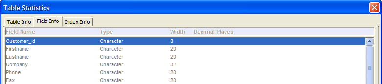
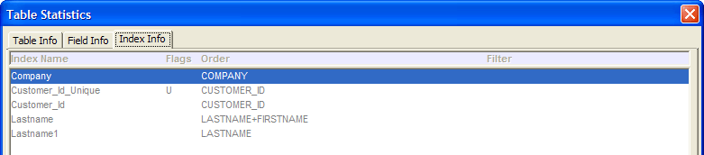

Table Statistics Dialog Box
Selecting File > Database Information displays the Table Statistics screen.
View Records displays the default browse for the selected table.
Count Deleted Records updates the Deleted column for the selected table.
The Table Info tab shows a list of each table in the database, the date the table was last updated, the number of records in the table, the number of records deleted, the table type, and whether the table is currently open.

The Field Info tab shows a list of each field in the table selected on the Table Info tab, field type, field size, and number of decimal places.

The Index Info tab shows a list of each index in the table selected on the Table Info tab, its sort flags, order expression, and filter expression.
